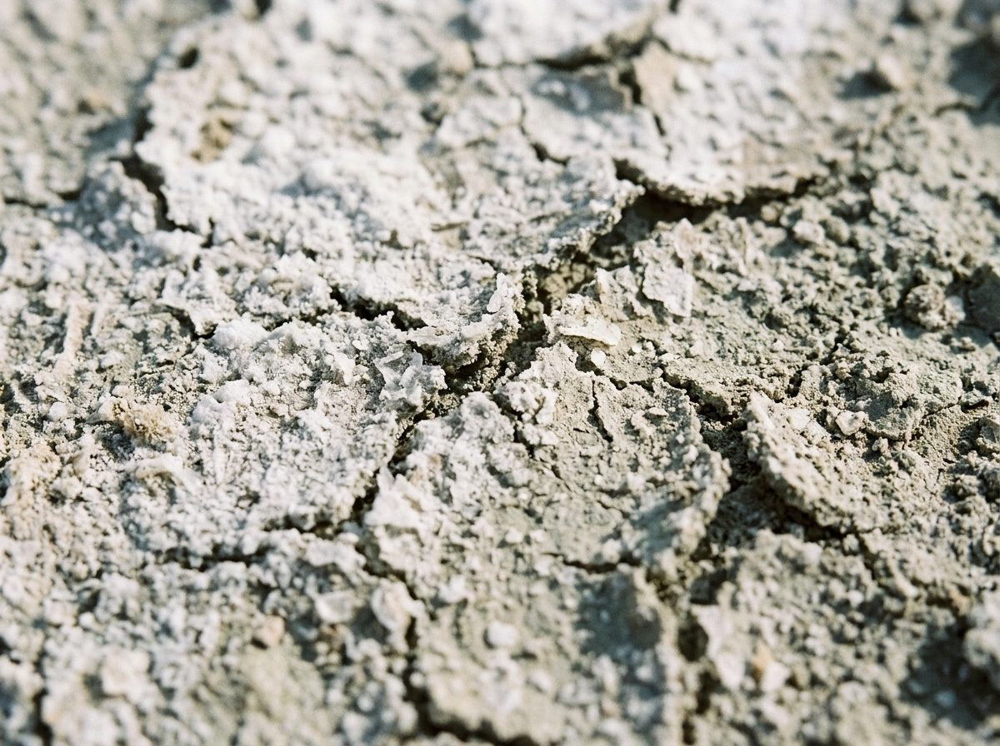
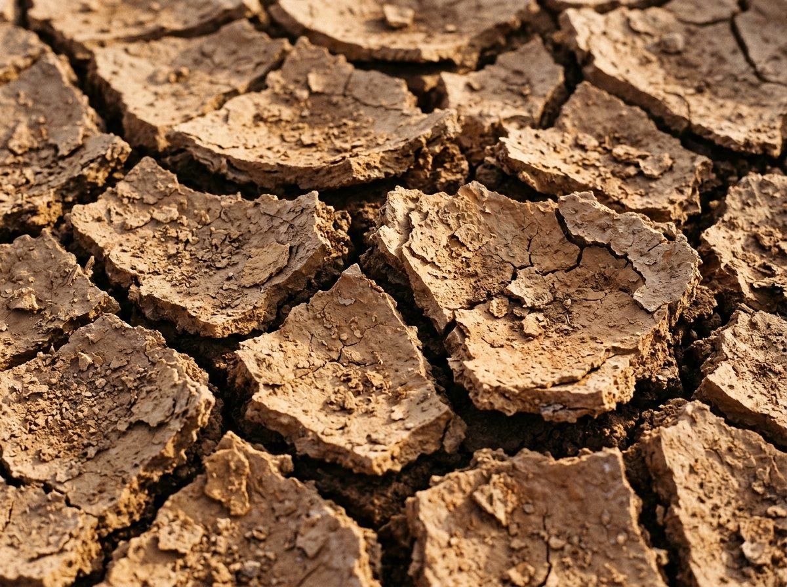
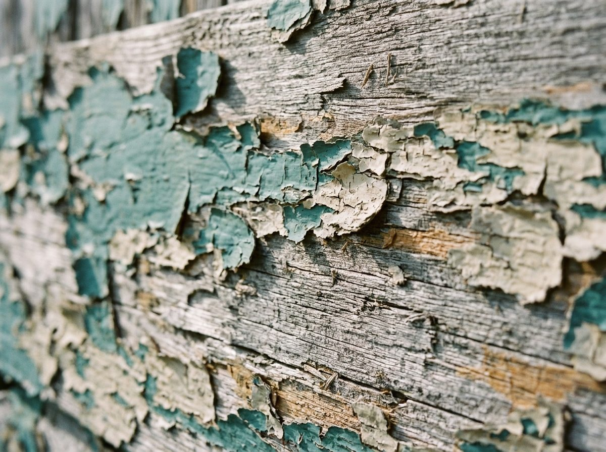
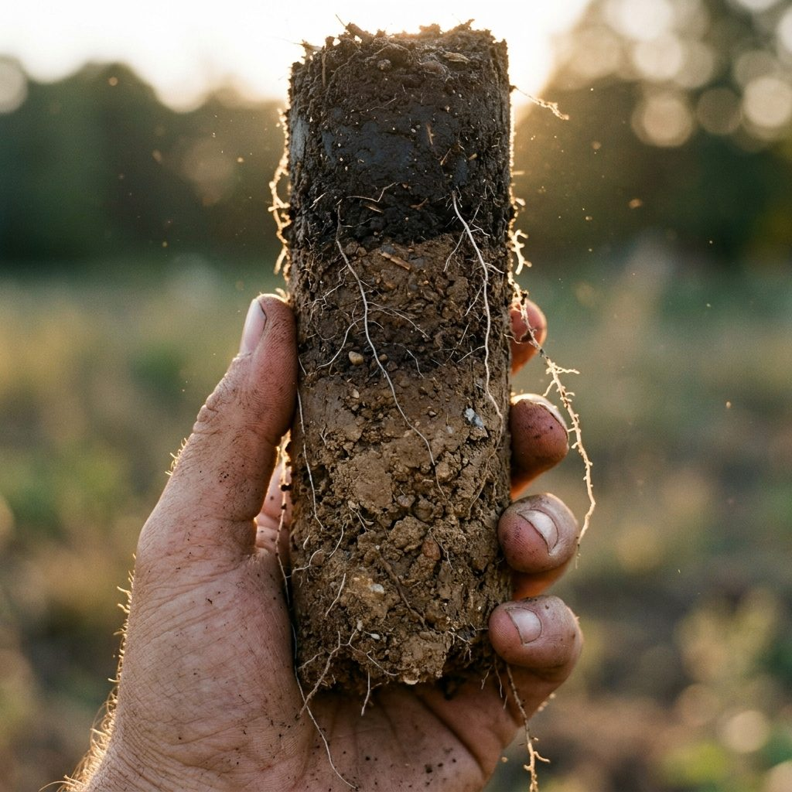

What we test

Stressors

Carried in by winter grit, softened tap water, and generous feeding, salt is one of the quieter reasons a border sulks. It is worth following across seasons, because a wet winter can wash it out and a dry summer can draw it straight back up.

Pressed in by boots, barrows, and old building work, compaction closes the small air spaces roots and worms rely on. A core shows which layer tightened and roughly when, so you can loosen the right depth instead of digging the whole bed.

Rain, conifer needles, and some fertilizers all nudge soil sour over time. Acidity decides which nutrients plants can reach, so knowing when the drift began tells you far more than a single reading on a paper strip.

Sprays used years ago, on your plot or on the hay that became your manure, can linger in a layer long after the label is gone. Residue patterns help explain why beans curl in one bed and thrive in the next.

Old paint, ash pits, and decades of traffic left lead behind in many town gardens. It stays close to where it fell, so a layered reading shows whether you are looking at last year’s dust or a much older chapter.

Mulch film, netting, worn pots, and some bagged compost all shed fragments that settle into the ground. Counting them by layer shows whether they arrived with a single delivery or have been building season after season.

Feeders

Found in manure, clover, and almost every bag of feed, nitrogen drives leafy growth and moves quickly with the rain. Your timeline shows whether it has held steady, or arrived in one rush and left just as fast.

Found in bone meal, compost, and poultry manure, phosphorus supports strong roots and early growth. It builds slowly and leaves slowly, which makes the long view in a core especially helpful.

Found in wood ash, comfrey, and seaweed, potassium helps plants fruit, flower, and stand up to frost. A layered reading shows how much your soil holds on to between one harvest and the next.

Found in chalk, lime, and crushed shell, calcium builds strong cell walls and helps clay crumble rather than clod. Your results show whether old liming still has any effect on the layers your roots are using.

At the centre of every green leaf, magnesium comes from dolomite, some clays, and Epsom salts. Pale leaves with green veins are a familiar sign, and a timeline helps separate true shortage from a passing dry spell.

Coal smoke once delivered sulfur to gardens for free. With cleaner air, many beds now run short, which matters for onions, brassicas, and flavor. A core often shows the very layer where the supply tailed off.

Humus is the dark, spongy remainder of everything that ever lived in your ground. It holds water, feeds roots, and steadies temperature, and it is the best single sign of how a bed has been treated over the years.

Living signals

Fine fungal threads carry water and minerals to roots and bind crumbs together. Digging breaks them and mulch feeds them, so the pattern down a core is a quiet diary of how often the ground has been turned.

Every layer remembers how it has held and released water. Tracking moisture alongside the other markers shows which depth dries first, and gives you a useful reference point before you reach for the hose.
15 markers
30-season timeline
Markers
All markers
explained
- MarkerTypeWhere it comes fromNitrogen (N)Feeder
Drives leaf and stem. Found in manure, clover, coffee grounds and most feeds.
Phosphorus (P)FeederSupports roots and early growth. Found in bone meal, compost and poultry manure.
Potassium (K)FeederHelps fruit, flower and frost hardiness. Found in wood ash, comfrey and seaweed.
Calcium (Ca)FeederBuilds cell walls and crumb structure. Found in chalk, lime and eggshell.
Magnesium (Mg)FeederThe heart of every green leaf. Found in dolomite, Epsom salts and some clays.
Sulfur (S)FeederNeeded for flavor and protein. Once delivered by coal smoke, now often scarce.
Humus (Hu)FeederThe dark, spongy remains of life that hold water and food in the topsoil.
- MarkerTypeWhere it comes fromSalt (Sa)Stressor
Left by road grit, softened water and heavy feeding. Pulls moisture away from roots.
Compaction (Cm)StressorPressure from boots, barrows and building work that closes the air spaces roots need.
Acidity (Ac)StressorDrift in pH from rain, conifer litter and certain fertilizers that locks nutrients away.
Residues (Re)StressorTraces of past sprays and weedkillers, including those carried in with hay or manure.
Lead (Pb)StressorA legacy of old paint, traffic and ash in older towns and gardens.
Microplastics (Mp)StressorFragments from mulch film, mesh, plant pots and shop-bought compost.
- MarkerTypeWhere it comes fromMycelium (My)Living
Fungal threads that carry water and minerals to roots. Broken by heavy digging.
Moisture (Mo)LivingHow each layer has held and released water through wet and dry seasons.